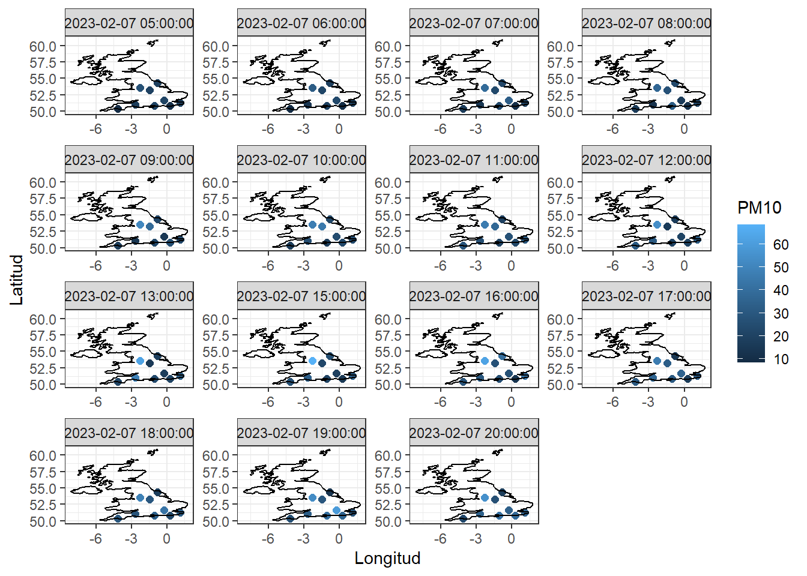
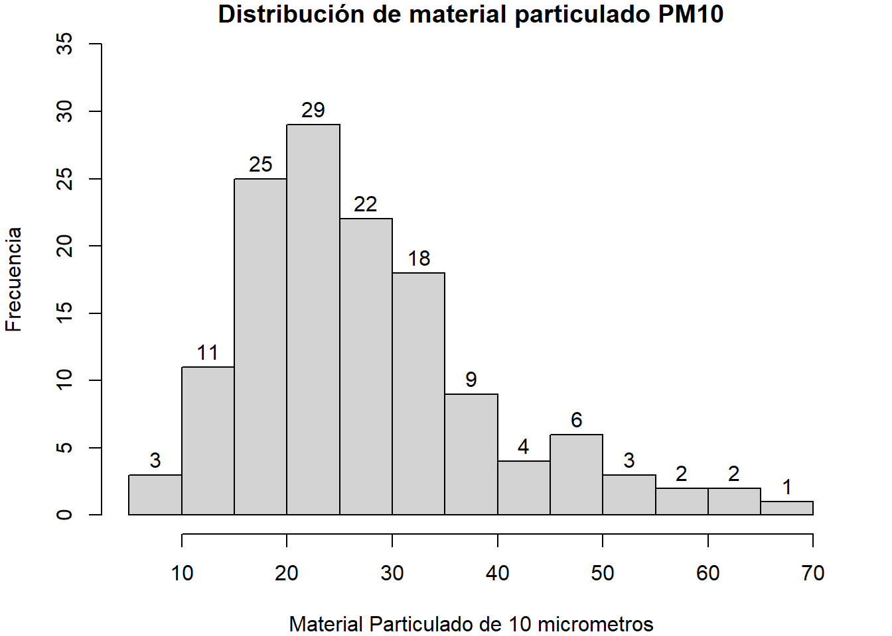
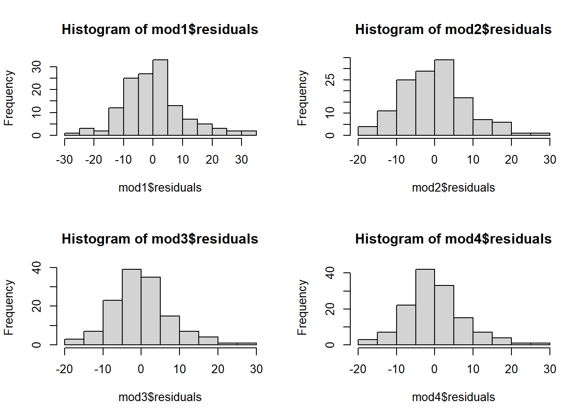
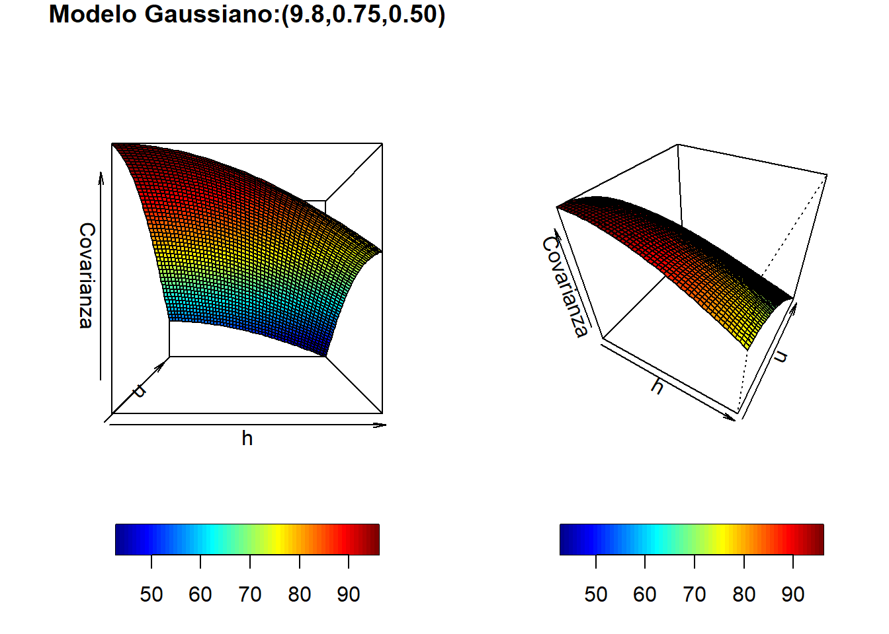
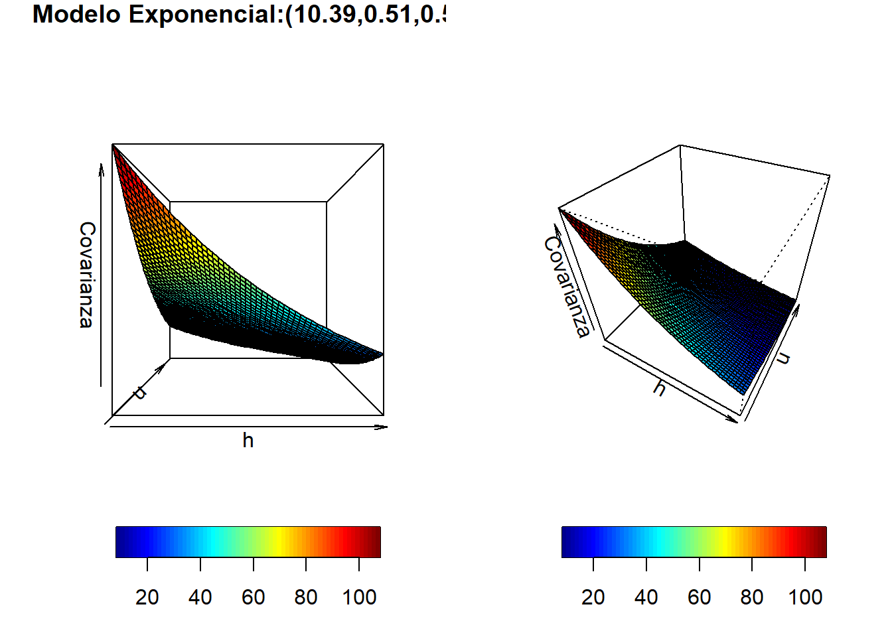
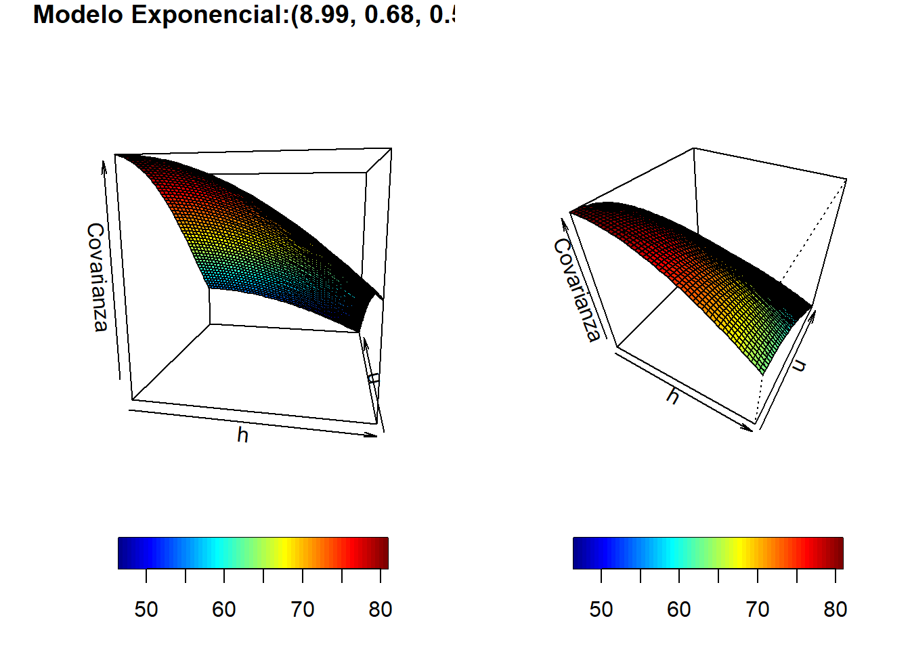

Kriging Espacio-Tiempo
Estadistica espacial
Contaminacion de aire
La contaminación del aire es un problema global que afecta la salud y el bienestar de millones de personas en todo el mundo. Uno de los contaminantes más preocupantes es el material particulado, compuesto por partículas sólidas o líquidas suspendidas en el aire. Estas partículas, que varían en tamaño y composición, pueden tener efectos perjudiciales en la salud humana y el medio ambiente.
El Reino Unido en los ultimos años ha implementado regulaciones para reducir las emisiones de contaminates provenientes de vehículos y las emisiones industriales, para esto genero una politica donde se inluyen estándares de calidad del aire y límites de emision más estrictos.
Respecto al transporte público y movilidad el gobierno implemento politicas que tienen en cuenta el incentivo al uso de transporte público, asi como la construcción de ciclovías y la adopción de vehículos eléctricos. Adicional, se fomento a nivel industrial el uso des energías renovables y la reducción de la dependencia de combustibles fósiles en la generación de electricidad.
A pesar de los esfuerzos realizados, la contaminación del aire en el Reino Unido sigue siendo un desafío importante. Se requiere una colaboración continua entre el gobierno, las autoridades locales y la sociedad en general para implementar políticas efectivas y medidas prácticas que mejoren la calidad del aire y protejan la salud de la población y el medio ambiente.
En los últimos años la predicción ha tomado un rol importante para una infinidad de casos, especificamente en el aspecto ambientar la predicción de de los niveles de material particulado en el aire es fundamental para tomar medidas preventivas y mitigar los efectos adversos en la salud y el medio ambiente. En este sentido, uno de estos métodos esta relacionado con la Geoestadistica espacio-temporal la cual se ofrece una herramienta para predecir los niveles de PM en diferentes ubicaciones y períodos de tiempo. En este trabajo se explorara el kriging espacio temporal para la prediccion en una coordenada de material particulado.
Obtencion de los datos
La base de datos seleccionada para este trabajo proviene del departamento de Medio Ambiente, Alimentación y Asuntos Rurales del Reino unido,de la cual se extrae datos de la fuente de informacion del Reino Unido.
El reino unido mediante su agencia ambiental posee alrededor de 300 sitios de monitoreo ambiental los cuales se subdividen en redes que adquieren informacion particular de acuerdo al contaminante. Existen dos tipos de redes de monitoreo en el reino unido:
- Redes automaticas: estas permiten la captura de datos de contaminantes que se producen por hora. La recopilación de datos comprende datos desde 1972 para algunos sitios:
- Automatic Urban and Rural Network (AURN)
- Automatic Hydrocarbon Network (AHN)
- Automatic London Network
- Locally-managed automatic monitoring
- Redes no automaticas: La recopilacion de los datos se da para contaminantes que se producen con menor frecuencia (diaria,semanal, mensual) donde las muestras son recopiladas por medios físicos y son sometidas a análisis fisico-quimico que permite calcular la concentración de los resultados, a continuación se relacionan las redes de monitoreo para esta categoría:
- UK Eutrophying & Acidifying Network (UKEAP)
- Upland Waters Monitoring Network
- Heavy Metals Network
- Nitrogen Dioxide Diffusion Tube (1993 to 2005)
- Smoke and Sulphur Dioxide
- Black Carbon Network
- PAH
- Toxic Organic Micro Pollutants (TOMPs)
- Non-Automatic Hydrocarbon Network
- Particle Numbers and Concentrations Network
- JAQU privacy notice
- UK Urban NO2 Network
Dentro de los enlaces relacionados se puede recopilar la información disponible para cada red.
El gobierno del Reino Unido permite la extracción, analisis e interpretacion de los datos de codigo abierto y libre mediante el uso del paquete Openair usando R. Para la adecuación de los datos se realiza el procedimiento descrito en https://rspatialdata.github.io/air_pollution.html#Installing_the_openair_packageR mediante la integracion del paquete tidyverse.
Para la extracción de los datos se verifican algunas de las redes de monitoreo existentes y posterior se escogen las variables \(\ce{NO2}\) y PM\(_{10}\) para las cuales se verifican sus redes de monitoreo:
Con base en lo anterior se ejecuta el código para la extracción de los datos del 2023 y posteriormente se toman los diarios por hora del material particulado PM\(_{10}\) , se guarda en un data frame y se exporta como CSV:
library(tidyverse)
library(openair)
library(dplyr)
importAURN()
meta_data <- importMeta(source = "aurn", all = TRUE)
head(meta_data, 3)
selected_data <- meta_data %>%
filter(variable == c("NO2","PM10"))
head(selected_data, 3)
selected_sites <- selected_data %>%
select(code) %>%
mutate_all(.funs = tolower)
selected_sites
datos <- importAURN(site = selected_sites$code, year = 2023,
pollutant = c("pm10","nO2"),
meta = TRUE, data_type = "monthly")
Tabledata <- data.frame(Longitud = as.numeric(datos$longitude),
Latitud = as.numeric(datos$latitude),
Fecha=as.character(datos$date),
PM10=as.numeric(datos$pm10),
NO2=as.numeric(datos$no2),
sitio=as.character(datos$site))
Tabla<- subset(Tabledata,subset=(Tabledata$PM10!="NA" &
Tabledata$NO2!="NA"&
Tabledata$Fecha=="2022-02-23"))
head(Tabla)
dim(Tabla)
#write.csv(Tabla, "STPolucionUKhourly4.csv", row.names=TRUE)Se extraen los datos espaciales del día 23-02-23 y posteriormente se importa el archivo CSV
Kriging Espacio Tiempo
Descripcion de los datos
Para realizar la predicción en un punto desconocido y de acuerdo a las limitaciones computacionales se toman 9 ubicaciones en el espacio 13 momentos en el dia anteriormente mencionado. Como se puede observar acontinuacion:
library(rgdal)
library(sf)
library(ggplot2)
library(rgeoboundaries)library(readxl)
KSTPolution <- read_excel("C:/Users/GeorgeVega/Downloads/Kriging Espacio Tiempo Final.-20230619T205004Z-001/Kriging Espacio Tiempo Final 1/STPolucionUKhourly4.xlsx")
UK <- map_data(map = "world", region = "UK")
ggplot(KSTPolution) + # plot points
geom_point(aes(x = Longitud,y = Latitud, # lon and lat
colour = PM10), # attribute color
size = 2) +
geom_path(data = UK, # add UK map
aes(x = long, y = lat, group = group))+
facet_wrap( ~ Fecha, scales="free")+
theme_bw() 
Se realiza la proyeccion de coordenadas y se reorganizan los datos:
head(Tabledata,13) X Y Tiempo PM10
1 519597.8 197294.9 6 20.6
2 519597.8 197294.9 7 23.2
3 519597.8 197294.9 8 32.6
4 519597.8 197294.9 9 16.9
5 519597.8 197294.9 10 14.3
6 519597.8 197294.9 11 24.0
7 519597.8 197294.9 12 27.0
8 519597.8 197294.9 13 20.6
9 519597.8 197294.9 14 17.3
10 519597.8 197294.9 16 19.1
11 519597.8 197294.9 17 26.9
12 519597.8 197294.9 18 35.4
13 519597.8 197294.9 19 43.0Mediante un histograma de frecuencia se observa que la mayoria de los datos tiene una concentración entre 40\(\mu g\cdot m^{-3}\)
par( mar= c(4,4,1,2) )
hist(KSTPolution$PM10 ,freq=T,labels=TRUE, ylim=c(0,35),main="Distribución de material particulado PM10",
xlab="Material Particulado de 10 micrometros",
ylab="Frecuencia")
Modelo de tendencia espacio-temporal
Se genera un modelo de regresión que permite explicar las presencia de tendencias espaciales y temporales.El modelo se ajusto a través de mínimos cuadrados ordinarios (OLS), donde se encontraron las estimaciones de los parámetros que minimizan el suma de cuadrados residuales y nos permite obtener predicciones para la media
\[Z\left(\mathbf{s}_{i} ; t_{j}\right)=\beta_{0}+\beta_{1} X_{1}\left(\mathbf{s}_{i} ; t_{j}\right)+\ldots+\beta_{p} X_{p}\left(\mathbf{s}_{i} ; t_{j}\right)+e\left(\mathbf{s}_{i} ; t_{j}\right)\]
mod1 <- lm(PM10 ~ X + Y+Tiempo, data = Tabledata)
mod2 <- lm(PM10 ~ (X+Y+Tiempo)^2 +., data = Tabledata)
mod3 <- lm(PM10 ~ (X+Y+Tiempo)^2 + I(X^2)+I(Y^2)+I(Tiempo^2), data = Tabledata)
mod4 <- lm(PM10 ~ (X+Y+Tiempo)^2 + I(X^2)+I(Y^2)+I(Tiempo^2)+ sin(Tiempo)+cos(Tiempo), data = Tabledata)
summary(mod1)
Call:
lm(formula = PM10 ~ X + Y + Tiempo, data = Tabledata)
Residuals:
Min 1Q Median 3Q Max
-27.084 -6.557 -0.743 4.630 33.778
Coefficients:
Estimate Std. Error t value Pr(>|t|)
(Intercept) 1.504e+01 4.838e+00 3.109 0.00230 **
X -1.361e-05 8.544e-06 -1.593 0.11351
Y 2.075e-05 6.071e-06 3.418 0.00084 ***
Tiempo 1.032e+00 1.905e-01 5.416 2.81e-07 ***
---
Signif. codes: 0 '***' 0.001 '**' 0.01 '*' 0.05 '.' 0.1 ' ' 1
Residual standard error: 10.5 on 131 degrees of freedom
Multiple R-squared: 0.247, Adjusted R-squared: 0.2298
F-statistic: 14.33 on 3 and 131 DF, p-value: 3.957e-08summary(mod2)
Call:
lm(formula = PM10 ~ (X + Y + Tiempo)^2 + ., data = Tabledata)
Residuals:
Min 1Q Median 3Q Max
-18.4559 -6.3125 -0.3251 4.7552 29.0243
Coefficients:
Estimate Std. Error t value Pr(>|t|)
(Intercept) -2.998e+01 1.089e+01 -2.754 0.006751 **
X 8.000e-05 2.332e-05 3.430 0.000813 ***
Y 3.460e-04 3.935e-05 8.794 8.29e-15 ***
Tiempo 1.786e+00 7.037e-01 2.538 0.012338 *
X:Y -6.875e-10 8.470e-11 -8.117 3.42e-13 ***
X:Tiempo -5.878e-07 1.463e-06 -0.402 0.688513
Y:Tiempo -2.182e-06 1.039e-06 -2.099 0.037753 *
---
Signif. codes: 0 '***' 0.001 '**' 0.01 '*' 0.05 '.' 0.1 ' ' 1
Residual standard error: 8.53 on 128 degrees of freedom
Multiple R-squared: 0.5146, Adjusted R-squared: 0.4919
F-statistic: 22.62 on 6 and 128 DF, p-value: < 2.2e-16summary(mod3)
Call:
lm(formula = PM10 ~ (X + Y + Tiempo)^2 + I(X^2) + I(Y^2) + I(Tiempo^2),
data = Tabledata)
Residuals:
Min 1Q Median 3Q Max
-18.5928 -4.7789 -0.5945 4.0709 28.8944
Coefficients:
Estimate Std. Error t value Pr(>|t|)
(Intercept) 1.042e+00 1.588e+01 0.066 0.947786
X -1.482e-04 6.483e-05 -2.286 0.023934 *
Y 4.404e-04 4.382e-05 10.051 < 2e-16 ***
Tiempo 3.024e+00 1.199e+00 2.522 0.012929 *
I(X^2) 2.501e-10 7.328e-11 3.413 0.000868 ***
I(Y^2) -1.593e-10 6.308e-11 -2.526 0.012798 *
I(Tiempo^2) -4.570e-02 3.683e-02 -1.241 0.216995
X:Y -6.753e-10 1.019e-10 -6.628 9.14e-10 ***
X:Tiempo -5.878e-07 1.383e-06 -0.425 0.671518
Y:Tiempo -2.182e-06 9.824e-07 -2.221 0.028154 *
---
Signif. codes: 0 '***' 0.001 '**' 0.01 '*' 0.05 '.' 0.1 ' ' 1
Residual standard error: 8.063 on 125 degrees of freedom
Multiple R-squared: 0.5765, Adjusted R-squared: 0.546
F-statistic: 18.91 on 9 and 125 DF, p-value: < 2.2e-16summary(mod4)
Call:
lm(formula = PM10 ~ (X + Y + Tiempo)^2 + I(X^2) + I(Y^2) + I(Tiempo^2) +
sin(Tiempo) + cos(Tiempo), data = Tabledata)
Residuals:
Min 1Q Median 3Q Max
-18.2833 -4.6071 -0.6421 4.1530 29.0620
Coefficients:
Estimate Std. Error t value Pr(>|t|)
(Intercept) 1.803e+00 1.623e+01 0.111 0.911744
X -1.482e-04 6.533e-05 -2.268 0.025042 *
Y 4.404e-04 4.416e-05 9.974 < 2e-16 ***
Tiempo 2.904e+00 1.287e+00 2.257 0.025800 *
I(X^2) 2.501e-10 7.385e-11 3.386 0.000951 ***
I(Y^2) -1.593e-10 6.357e-11 -2.506 0.013507 *
I(Tiempo^2) -4.127e-02 4.058e-02 -1.017 0.311247
sin(Tiempo) -2.267e-01 1.072e+00 -0.211 0.832849
cos(Tiempo) -2.153e-01 1.023e+00 -0.211 0.833623
X:Y -6.753e-10 1.027e-10 -6.577 1.23e-09 ***
X:Tiempo -5.878e-07 1.393e-06 -0.422 0.673907
Y:Tiempo -2.182e-06 9.900e-07 -2.204 0.029392 *
---
Signif. codes: 0 '***' 0.001 '**' 0.01 '*' 0.05 '.' 0.1 ' ' 1
Residual standard error: 8.125 on 123 degrees of freedom
Multiple R-squared: 0.5768, Adjusted R-squared: 0.539
F-statistic: 15.24 on 11 and 123 DF, p-value: < 2.2e-16
Kriging espacio temporal
Estimacion de la funcion de covarianza
Para la predccion espacio temporal se debe realizar la estimacion de la funcion de covarianza, en la cual se realizo mediante un metodo basado en la funcion de verosimilitud, se utilizaron 3 modelos propuestos.
library(dplyr)
Datos<- Tabledata[,c(1,2,3)]
datos=cbind(Datos,mod1$residuals)
names(datos)=c("x","y","t","z((x,y),t)")
head(datos,10) x y t z((x,y),t)
1 519597.8 197294.9 6 2.3428963
2 519597.8 197294.9 7 3.9109119
3 519597.8 197294.9 8 12.2789275
4 519597.8 197294.9 9 -4.4530569
5 519597.8 197294.9 10 -8.0850413
6 519597.8 197294.9 11 0.5829743
7 519597.8 197294.9 12 2.5509899
8 519597.8 197294.9 13 -4.8809945
9 519597.8 197294.9 14 -9.2129789
10 519597.8 197294.9 16 -9.4769477tail(datos,10) x y t z((x,y),t)
126 465590.5 103728.3 11 -4.960550
127 465590.5 103728.3 12 -3.367535
128 465590.5 103728.3 13 -3.774519
129 465590.5 103728.3 14 -2.056503
130 465590.5 103728.3 16 -7.245472
131 465590.5 103728.3 17 -3.302457
132 465590.5 103728.3 18 1.415559
133 465590.5 103728.3 19 3.233575
134 465590.5 103728.3 20 9.226590
135 465590.5 103728.3 21 9.094606coordenada=data.frame(X,Y)
rezagos_esp=as.matrix(dist(coordenada))
rezagos_temp=as.matrix(dist(Tabledata$Tiempo))
dim(rezagos_temp) [1] 135 135dim(rezagos_esp) [1] 135 135Modelo Gaussiano
Gaussiano=function(p,h,u){p[1]^2*exp(-p[2]^2*u^2-p[3]^2*h^2)}
LV<-function(p,h,u,modelo,z){0.5*(length(z)*log(2*pi)+
log(det(modelo(p,h=rezagos_esp,u=rezagos_temp)))+
t(z)%*%solve(modelo(p,h=rezagos_esp,u=rezagos_temp))%*%z)}LV(c(1,1,1.5),
h=rezagos_esp,
u=rezagos_temp,
modelo=Gaussiano,
z=mod1$residuals) [,1]
[1,] 5662.957p0 <- c(0.1,0.8,0.5)
lo <- c(0.03,0.008,0.01)
hi <- c(Inf,Inf,Inf)
estima1=optim(p0,LV,h=rezagos_esp,
u=rezagos_temp,
modelo=Gaussiano,
z=mod1$residuals,
hessian = T,
lower = lo,upper =hi,
method = "L-BFGS-B")
estima1$par[1] 9.8002594 0.7463066 0.5000000library(fields)
h=seq(0,1,len=50)
u=seq(0,1,len=50)
f<-outer(h,u,Gaussiano,p=c(9.8002594, 0.7463066, 0.5000000))
par(mfrow = c(1, 2))
par( mar= c(4,4,1,2) )
drape.plot(h,u,f,main="Modelo Gaussiano:(9.8,0.75,0.50)",
xlab="h",ylab="u",zlab="Covarianza",
theta =0,phi=0, col=tim.colors(64))
drape.plot(h,u,f,xlab="h",ylab="u",
zlab="Covarianza", theta =30,phi=40,
col=tim.colors(64))
Modelo exponencial
Exponencial=function(p,h,u){p[1]^2*exp(-p[2]^2*u-p[3]^2*h)}
LV(c(1,1,1),h=rezagos_esp,u=rezagos_temp,
modelo=Exponencial,z=mod1$residuals) [,1]
[1,] 5254.112p0 <- c(1,0.8,0.5)
lo <- c(0.03,0.008,0.01)
hi <- c(Inf,Inf,Inf)
estima2=optim(p0,LV,h=rezagos_esp,
u=rezagos_temp,
modelo=Exponencial,
z=mod1$residuals,
hessian = T,
lower = lo,upper = hi,
method = "L-BFGS-B")
estima2$par[1] 10.3888962 0.5146516 0.5000000library(fields)
h=seq(0,5,len=50)
u=seq(0,5,len=50)
f<-outer(h,u,Exponencial,p=c( 10.3888962, 0.5146516 , 0.5000000))
par(mfrow = c(1, 2))
par( mar= c(4,4,1,2) )
drape.plot(h,u,f,
main="Modelo Exponencial:(10.39,0.51,0.5)",
xlab="h",ylab="u",zlab="Covarianza",
theta =0,phi=0, col=tim.colors(64))
drape.plot(h,u,f,
xlab="h",ylab="u",zlab="Covarianza",
theta =30,phi=40, col=tim.colors(64))
Modelo Cressie-Huang
CH_1=function(h,u,p){(p[1]^2/((p[2]^2*u^2+1)))*exp(-(p[3]^2*h^2)/(p[2]^2*u^2+1))}
LV(c(1,1,1),h=rezagos_esp,u=rezagos_temp,
modelo=CH_1,z=mod1$residuals) [,1]
[1,] 5132.997p0 <- c(1,0.1,0.5)
lo <- c(1,0.2,0.1)
hi <- c(Inf,Inf,Inf)
estima3=optim(p0,LV,h=rezagos_esp,u=rezagos_temp,
modelo=CH_1,z=mod1$residuals,
hessian = T,
lower = lo,upper = hi,
method = "L-BFGS-B")
estima3$par[1] 9.6476755 0.6844711 0.5000000library(fields)
h=seq(0,1,len=50)
u=seq(0,1,len=50)
f<-outer(h,u,CH_1,p=c(8.993838,0.6844711,0.5))
par(mfrow = c(1, 2))
par( mar= c(4,4,1,2) )
drape.plot(h,u,f,main="Modelo Exponencial:(8.99, 0.68, 0.5)",
xlab="h",ylab="u",zlab="Covarianza",
theta =10,phi=10, col=tim.colors(64))
drape.plot(h,u,f,xlab="h",ylab="u",zlab="Covarianza",
theta =30,phi=40, col=tim.colors(64))
Mediante kriging simple se busca realizar la predicción en el día estipulado y en el tiempo \(t=15\), en las coordenadas longitudinales Long=0.1 y Lat=52.5, como se observa en el siguiente mapa
Se realiza la proyeccion de las coordenas:
XPred<-coordinates(coordenadasPred)[,1]
YPred<-coordinates(coordenadasPred)[,2]
XPredLongitud
542532.5 YPred Latitud
291235.4 Se genera la grilla
grillaSpT0=rbind(cbind(X,Y,Tabledata$Tiempo),c(XPred,YPred,15))
grillaSpT0[c(1,16,31,46,61,76,91,106,121,136),] X Y
[1,] 519597.8 197294.88 6
[2,] 380542.3 407001.32 6
[3,] 616063.3 157376.00 6
[4,] 352105.4 128826.92 6
[5,] 436368.5 372070.68 6
[6,] 560038.8 103213.37 6
[7,] 477444.7 493885.83 6
[8,] 247671.3 54681.07 6
[9,] 465590.5 103728.32 6
[10,] 542532.5 291235.36 15matDistSp0=as.matrix(dist(grillaSpT0[,1:2]))
matDistT0=as.matrix(dist(grillaSpT0[,3:3]))
dim(matDistSp0)[1] 136 136dim(matDistT0)[1] 136 136Predicicion Modelo Exponencial
sigmaExp=Exponencial(rezagos_esp,rezagos_temp,p=estima2$par)
sigmaExp0=Exponencial(matDistSp0,matDistT0,p=estima2$par)
lambdaExp=solve(sigmaExp)%*%sigmaExp0[135,-135]
z_predExp0=t(lambdaExp)%*%datos[,4]
Varianzaz_predExp0=sigmaExp[1,1]-t(sigmaExp0[135,-135])%*%solve(sigmaExp)%*%sigmaExp0[135,-135]Predicicion Modelo Gaussiano
sigmaG=Gaussiano(rezagos_esp,rezagos_temp,p=estima1$par)
sigmaG0=Gaussiano(matDistSp0,matDistT0,p=estima1$par)
lambdaG=solve(sigmaG)%*%sigmaG0[135,-135]
z_predG0=t(lambdaG)%*%datos[,4]
Varianzasz_predG0=sigmaG[1,1]-t(sigmaG0[135,-135])%*%solve(sigmaG)%*%sigmaG0[135,-135]Predicicion Modelo Cressie-Huang
sigmaCH=CH_1(rezagos_esp,rezagos_temp,p=estima3$par)
sigmaCH0=CH_1(matDistSp0,matDistT0,p=estima3$par)
lambdaCH=solve(sigmaCH)%*%sigmaCH0[135,-135]
z_predCH0=t(lambdaCH)%*%datos[,4]
Varianzasz_predCH0= sigmaCH[1,1]-t(sigmaCH0[135,-135])%*%solve(sigmaCH)%*%sigmaCH0[135,-135]Los resultados obtenidos para los 3 modelos se observan en la siguiente tabla:
Modelo<-c("Exponencial","Gaussiano","Cressie-Huang")
Pred<-c(z_predExp0,z_predG0,z_predCH0 )
Var.Pred<-c(Varianzaz_predExp0,Varianzasz_predG0,Varianzasz_predCH0)
df<-data.frame(Modelo=Modelo, Predicción=Pred, Varianza_Prediccion=Var.Pred)
pander::pander(df)| Modelo | Predicción | Varianza_Prediccion |
|---|---|---|
| Exponencial | 4.195 | -46.59 |
| Gaussiano | 4.726 | 23.36 |
| Cressie-Huang | 5.007 | 2.18 |
Se puede observar que las predicciones son similares en magnitud, sin embargo la varianza de prediccion es menor para el modelo de covarianza de Cressie-Huang. Se debe tener en cuenta que el modelo exponencial y el modelo gaussiano los cuales pueden resultar modelos no validos ya que son modelos separables donde se modela de forma separada los componentes espaciales y temporales.